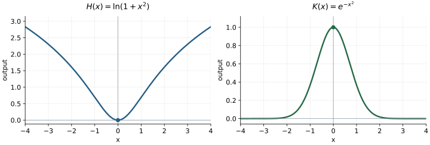

1. Following the operations
A parking garage charges an entry fee of $2 plus $4 per hour, with fractional hours charged proportionally. A driver records a visit in minutes. We can first convert minutes to hours, then calculate the charge:
For a 90-minute visit, \(h(90)=1.5\) hours and \(C(1.5)=8\) dollars. The charge as a function of minutes is
\[C(h(t))=4\left(\frac{t}{60}\right)+2=\frac{t}{15}+2,\qquad t\geq0.\]The output of \(h\) becomes the input of \(C\). This is function composition. We write \((f\circ g)(x)=f(g(x))\), read “\(f\) composed with \(g\).” Calculate \(g(x)\) first, then apply \(f\) to that result. The units help check the order: minutes become hours, and hours become dollars.
Order changes the result
Let \(f(x)=x^2\) and \(g(x)=x+3\). Then
\[f(g(x))=(x+3)^2,\qquad g(f(x))=x^2+3.\]At \(x=2\), the first gives \(25\), and the second gives \(7\). Adding three before squaring produces a different calculation from adding three after squaring.
Composition also works when functions are given by data. Use the first table to find an intermediate output, then look for that number as an input in the second table.
| \(x\) | \(g(x)\) | \(u\) | \(f(u)\) |
|---|---|---|---|
| 0 | 2 | 1 | 7 |
| 1 | 4 | 2 | 5 |
| 2 | 1 | 4 | 9 |
For example, \(g(1)=4\), so \(f(g(1))=f(4)=9\). On graphs, do the same thing: read the height of the first graph, then use that height as the horizontal coordinate on the second graph.
Check the results
The values are \(4\), \(4\), and \(2\), respectively. The two compositions agree at this particular input even though their formulas describe different functions.
2. Taking a function apart
We can start with a formula and identify the functions that compose it. For
\[H(x)=\ln(1+x^2),\]the operations are: square the input, add one, then take the natural logarithm. One useful two-function description is
\[g(x)=1+x^2,\qquad f(u)=\ln u,\qquad H=f\circ g.\]The variable \(u\) names an input to the outer function. Its name does not change the function: \(f(u)=\ln u\) and \(f(x)=\ln x\) describe the same rule.
Three layers
For \(K(x)=e^{-(x-2)^2}\), first subtract two, then square and negate, then exponentiate. Taking
\[a(x)=x-2,\qquad b(u)=-u^2,\qquad c(v)=e^v\]gives \(K(x)=c(b(a(x)))\). At \(x=3\), the intermediate values are \(1\), \(-1\), and \(e^{-1}\).
A decomposition can have several valid forms. In \(\ln(1+x^2)\), we might group “square and add one” as one function, or keep those as separate functions. A useful decomposition makes the task easier to see.
Earlier transformations are also compositions. If \(T(x)=x-2\), then \(f(T(x))=f(x-2)\) changes the input before \(f\) acts. If \(S(u)=u+3\), then \(S(f(x))=f(x)+3\) changes the output afterward.
One possible decomposition
For the first, use \(g(x)=3x+1\), \(f(u)=\sqrt u\). For the second, use \(g(x)=\ln x\), \(f(u)=u^2\). The expression \((\ln x)^2\) squares the logarithm; \(\ln(x^2)\) takes the logarithm of a square.
3. Tracking the domain
An input belongs to the domain of \(f(g(x))\) when \(g(x)\) is defined and its output belongs to the domain of \(f\). Every stage of the calculation must be possible.
| Operation at a stage | Requirement on its input \(u\) |
|---|---|
| \(\sqrt u\) | \(u\geq0\) |
| \(\ln u\) | \(u>0\) |
| \(1/u\) | \(u\ne0\) |
| \(u^2\) or \(e^u\) | Every real \(u\) is allowed |
A logarithm of a quadratic
For \(F(x)=\ln(4-x^2)\), the quadratic is defined for every real \(x\). The logarithm requires
\[4-x^2>0\quad\Longleftrightarrow\quad x^2<4\quad\Longleftrightarrow\quad -2<x<2.\]The domain is \((-2,2)\). At either endpoint the logarithm would receive zero; outside the interval it would receive a negative number.
A square root of a logarithm
For \(G(x)=\sqrt{\ln x}\), the logarithm first requires \(x>0\). The square root then requires \(\ln x\geq0\). Since \(\ln1=0\) and the natural logarithm is increasing, the combined requirement is \(x\geq1\). The endpoint is included because \(G(1)=0\).
For \(H(x)=\ln(1+x^2)\), we always have \(1+x^2\geq1>0\), so the domain is all real numbers.
Check the domains
For the first, require \(x>0\) and \(\ln x\ne0\): \((0,1)\cup(1,\infty)\). For the second, the square root requires \(x\geq3\); exponentiation adds no further restriction.
4. Undoing the layers
To solve a composite equation, reverse the operations one layer at a time. Keep track of which operations can produce more than one possible input.
Two inputs with the same output
\[\ln(x^2+1)=\ln5.\]Both logarithm arguments are positive. Because the logarithm is one-to-one, the arguments must agree:
\[x^2+1=5,\qquad x^2=4,\qquad x=\pm2.\]Both values are in the domain and give \(\ln5\). Squaring sends \(2\) and \(-2\) to the same value, which accounts for the two solutions.
A radical equation
\[\sqrt{\ln x}=2.\]Squaring gives \(\ln x=4\), and exponentiating gives \(x=e^4\). This value lies in the domain \(x\geq1\), and substitution checks the result.
Inverse relationships also depend on domains:
\[\ln(e^x)=x\quad(x\in\mathbb R),\qquad e^{\ln x}=x\quad(x>0),\qquad\sqrt{x^2}=|x|\quad(x\in\mathbb R).\]The simplified expression must retain the original domain. For instance, \(e^{\ln x}\) has no real value at \(x=-1\), even though the expression \(x\) alone does.
Worked result
The original domain is \(-3<x<3\). Exponentiating gives \(9-x^2=1\), so \(x=\pm\sqrt8=\pm2\sqrt2\). Both lie in the domain.
5. Giving a repeated expression a name
Sometimes the same inner expression appears more than once. A temporary variable can reveal an equation we already know how to solve.
A quadratic in an exponential
\[e^{2x}-5e^x+6=0.\]Since \(e^{2x}=(e^x)^2\), let \(u=e^x\). Then \(u>0\), and
\[u^2-5u+6=0,\qquad(u-2)(u-3)=0.\]Both candidates are positive. Returning to \(x\) gives \(e^x=2\) or \(e^x=3\), so
\[x=\ln2\quad\text{or}\quad x=\ln3.\]A restriction on the temporary variable
\[e^{2x}+e^x-6=0.\]With \(u=e^x>0\), we get \((u+3)(u-2)=0\). The candidate \(u=-3\) cannot equal \(e^x\). Only \(u=2\) remains, giving \(x=\ln2\).
A quadratic in a logarithm
\[(\ln x)^2-3\ln x+2=0.\]The original domain is \(x>0\). Let \(u=\ln x\); here \(u\) may be any real number. Factoring gives \((u-1)(u-2)=0\). Thus \(\ln x=1\) or \(2\), and \(x=e\) or \(e^2\).
After solving for the temporary variable, always translate back to the original variable and check its restrictions. The substitution organizes the algebra; the original equation determines which answers make sense.
Worked result
Set \(u=e^x>0\). Then \((u-3)(u-4)=0\), so \(x=\ln3\) or \(\ln4\).
6. Reading the graph from its components
Composition lets us explain a graph by following what happens to the input. Use the composition explorer to trace an input through each stage.
\(H(x)=\ln(1+x^2)\)
Opposite inputs have the same square, so \(H(-x)=H(x)\): the graph is symmetric about the vertical axis. Its smallest logarithm argument is \(1\), attained at \(x=0\). Since logarithms preserve order, the minimum is \(H(0)=0\). As \(|x|\) grows, the argument and its logarithm grow without bound.
\(K(x)=e^{-x^2}\)
Again the graph is symmetric. The exponent \(-x^2\) is largest at \(0\), so the maximum is \(K(0)=1\). As \(|x|\) grows, the exponent becomes increasingly negative and the output approaches zero. Every output is positive, so the range is \((0,1]\).

Check the interpretation
The exponent is largest when \(x-2=0\). The peak is \((2,1)\), and the graph is symmetric about \(x=2\).
Looking toward calculus
Suppose \(u=g(x)\) and \(y=f(u)\). A change in \(x\) first changes \(u\), which then changes \(y\). Calculus studies how these changes are related. Identifying the inner and outer functions is the first step in the chain rule. Giving an inner expression a temporary name is also a habit used in integration.
We can practice that attention now. If \(F(x)=x^2\), then \(F(x+h)=(x+h)^2\), while \(F(x)+h=x^2+h\). In the first expression we change the input before applying \(F\); in the second we change the output afterward.
Exercises
Show the intermediate functions or values that support each answer.
- Let \(f(x)=x^2\), \(g(x)=x+3\). Find formulas for \(f\circ g\) and \(g\circ f\), then evaluate both at \(x=1\).
- Using the two tables in Section 1, find \(f(g(0))\), \(f(g(2))\), and \(g(f(0))\). Explain any value the tables do not supply.
- Give inner and outer functions for \(\sqrt{2x-1}\), \(\ln(1+x^2)\), and \((\ln x)^2\).
- Describe \(e^{-(x-2)^2}\) as a composition of three functions and evaluate it at \(x=3\).
- Find the real domains of \(\ln(4-x^2)\), \(\sqrt{\ln x}\), and \(1/(\ln x)\).
- Simplify \(e^{\ln x}\), \(\ln(e^x)\), and \(\sqrt{x^2}\), retaining their domains.
- Solve \(\ln(x^2+1)=\ln10\), and check all solutions.
- Solve \(e^{2x}+e^x-6=0\) using a substitution.
- Solve \((\ln x)^2-5\ln x+6=0\) using a substitution.
- Explain the domain, symmetry, maximum, range, and end behavior of \(e^{-x^2}\).
- A cart's distance from a light is \(d(t)=2+0.5t\) meters for \(t\geq0\). A relative light reading is \(L(d)=100/d^2\). Find \(L(d(t))\), its physical domain, and the reading at \(t=4\) seconds.
- For \(F(x)=x^2\), expand \(F(x+h)\) and compare it with \(F(x)+h\). Identify which expression changes the input.